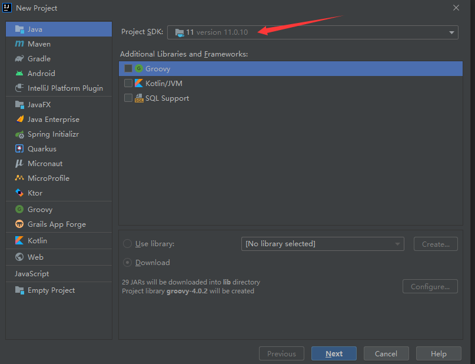
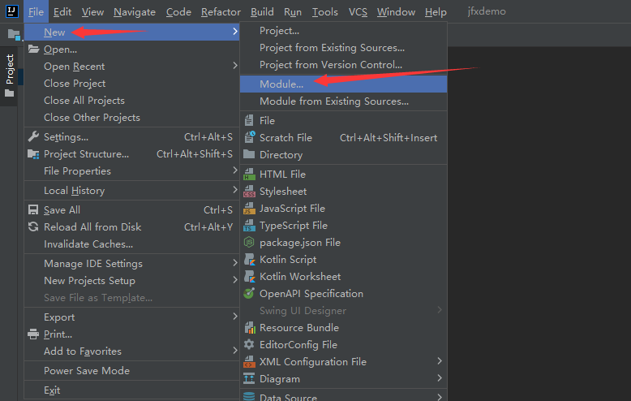

Java 模块化编程
现在，Java每半年发布一个版本，知道为什么这么快吗？这主要得益于Java的模块化技术。 换作以前，时间得以【年】计算。 从本质上讲，模块化(modularization） 是指将系统分解成独立且相互连接的模块的行为。模抉（ module） 是包含代码的可识别部分，使用元数据来描述模块与其它模块之间的关系。在Java 模块系统之前， JDK 的运行时库由一个庞大的rt.jar 所组成，其大小超过60MB ，包含了Java 大部分运行时类： 即Java 平台的最终载体。为了获得一个灵活且符合未来发展方向的平台， JDK 团队着手对JDK 进行模块化。模块化可以将jar声明为模块，它将在其自己的
隔离类加载器中运行，该类加载器以OSGI方式从其他类似的模块类加载器读取类文件。这将允许同一版本的Jar的多个版本共存。 毕竟Java太庞大，模块化过程持续了几年时间，最终随Java9发布.
Java9模块化系统出现以前Java模块化的核心三原则:
- 组合使用package和访问修饰符(public,protected,private)可以实现类型封装
- 定义良好的接口, 也就是使用interface关键字公开公共接口
- 显式依赖，也就是使用import关键字
Java9之后模块化
- JDK 由大约90个模抉组成，而不是一个整体库。与可由自己创建的应用程序模块不同的是，平台模块是JDK的一部分。从技术上讲，平台模块和应用模块之间没有任何技术区别。每个平台模块都构成了JDK 的一个定义良好的功能块，从日志记录到XML 支持。所有模块都显式地定义了与其他模块的依赖关系。
模块工作原理
什么是模块，它是如何定义的？模块拥有一个名称，并对相关的代码以及可能的其他资源进行分组，使用一个模块描述符进行描述。模块描述符保存在一个名为 module-info.java 的文件中, 为此我们先创建一个Project,然后在Project下创建两个module, 如图所示:
- 创建一个Project jfxdemo



- 在这个jfxdemo工程下创建二个javafx module, 以下是第一个模块demo1
- 第二个模块 demo2
创建完成后可以发现，每个module下都有一个模块描述文件 module-info.java
此处我们使用javafx是为了后续开发游戏做准备，同时Javafx库默认情况下不能直接在应用程序中使用，必须使用模块描述文件来导入
查看demo1模块的module-info.java文件
1
2
3
4
5
6module com.example1.demo1 {
requires javafx.controls;
requires javafx.fxml;
opens com.example.demo1 to javafx.fxml;
exports com.example1.demo1;
}module-info.java文件中的第一行表示，当前应用是一个模块，模块名为 com.example.demo1, 模块名称虽然随便写个字符串也可以，但最好以域名作为基础，也就是使用反向DNS符号来确保模块的唯一性，后面紧跟着项目名称，建议尽量使用自己的域名。模块都位于一个全局命名空间中，因此，模块名称必须唯一。
requires 表示一个依赖关系，此是表示当前应用程序需要使用到javafx.controls模块以及javafx.xml模块,如果将这两句代码删除，那么在需要引用这两个模块的类中将会提示错误, 如下图所示 :
- 注释了requires javafx.fxml;
- 在HelloApplication中将无法使用
exports的意思是来自com.example.demo1模块的单个包被导出到其它模块
opens表示com.example.demo1中的类型可用于深度反射
模块化开发
在demo2模块中需要使用demo1模块中的定义的类
- demo1模块中的module-info.java配置如下:
1 | module com.example.demo1 { |
- 在module demo2中的pom.xml文件中加入demo1的依赖
1 | <dependency> |
- 在demo2中要使用demo1模块中的类，则需要在demo2 模块中修改module-info.java文件
1 | module com.example.demo2 { |
- 在demo2模块中的HelloApplication中使用demo1模块中的类
1 | package com.example.demo2; |
- 如果在demo1模块中新建两个包，demo2模块中需要引用则要在demo1模块的module-info.java 文件中加入exports
demo2模块中的HelloApplication
1 | package com.example.demo2; |
上面的内容中使用了java11进行模块化开发的第一步，也就是手动编写自己的第一个模块，而不仅仅是查看JDK中现有的模块。有了这部分经验后，后续就可以创建更加复杂的模块